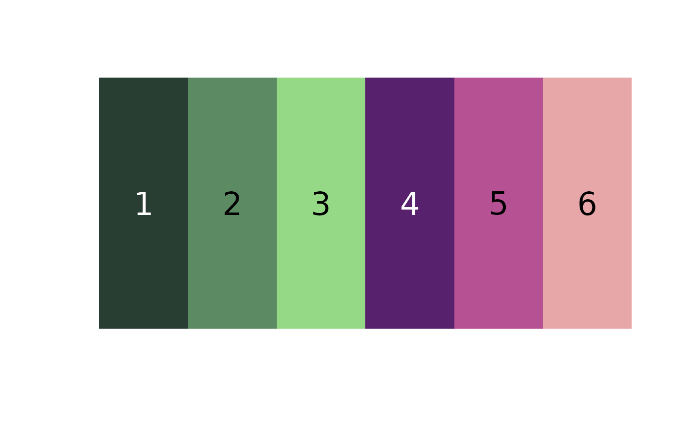
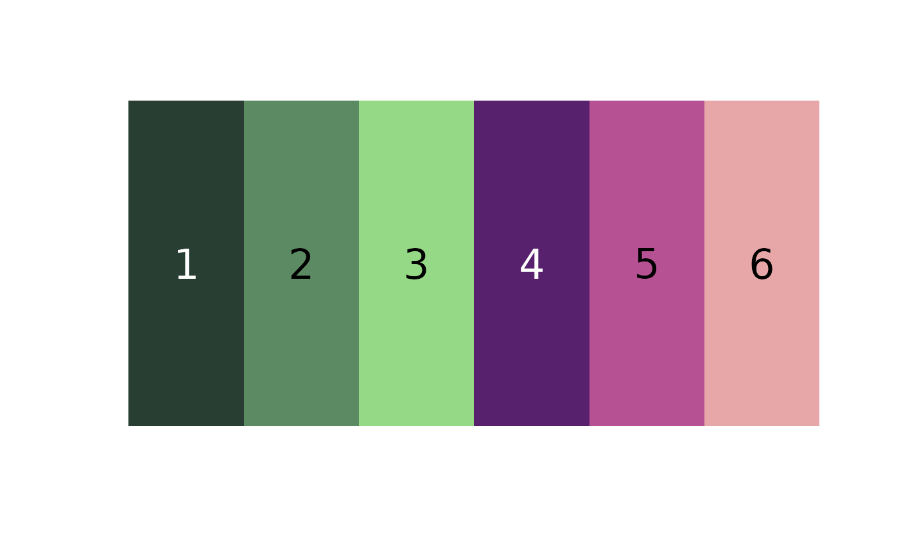

Clusters all the pixels in an image according to the specified method and returns color centers, cluster assignments, and cluster sizes.
Usage
colorClusters(
bg_indexed,
method = c("histogram", "kmeans"),
n = 10,
bins = 3,
color_space = "Lab",
ref_white = "D65",
bin_avg = TRUE
)Arguments
- bg_indexed
A list returned by
backgroundIndex().- method
Binning scheme to use, one of either
kmeansorhistogram. Produce very different results (see details).- n
If
method = "kmeans", the number of colors to fit.- bins
If
method = "histogram", either the number of bins per color channel (if a single number is provided) OR a vector of length 3 with the number of bins for each channel.- color_space
Color space in which to cluster colors, passed to
[grDevices]{convertColor}. One of "sRGB", "Lab", or "Luv". Default is "Lab", a perceptually uniform (for humans) color space.- ref_white
Reference white for converting to different color spaces. D65 (the default) corresponds to standard daylight.
- bin_avg
Logical. Return the color centers as the average of the pixels assigned to the bin (the default), or the geometric center of the bin?
Value
A list with the following elements:
pixel_assignments: A vector of color center assignments for each pixel.centers: A matrix of color centers, in RGB color space.sizes: The number of pixels assigned to each cluster.
Details
stats::kmeans() clustering tries to find the set of n clusters
that minimize overall distances. Histogram binning divides up color space
according to set breaks; for example, bins = 2 would divide the red, green,
and blue channels into 2 bins each (> 0.5 and < 0 .5), resulting in 8
possible ranges. A white pixel (RGB = 1, 1, 1) would fall into the R \> 0.5, G
\> 0.5, B \> 0.5 bin. The resulting centers represent the average color of all
the pixels assigned to that bin.
K-means clustering can produce more intuitive results, but because it is iterative, it will find slightly different clusters each time it is run, and their order will be arbitrary. It also tends to divide up similar colors that make up the majority of the image. Histogram binning will produce the same results every time, in the same order, and because it forces the bins to be dispersed throughout color space, tends to better pick up small color details. Bins are also comparable across images. However, this sometimes means returning empty bins (i.e. the white bin will be empty if clustering a very dark image).
Examples
# make a 100x100 'image' of random colors
img <- array(runif(30000), dim = c(100, 100, 3))
plotImageArray(img)
 # make a background index object:
bg_indexed <- backgroundIndex(img, backgroundCondition())
#> No pixels satisfying masking conditions; clustering all pixels
# histogram clustering
hist_clusters <- colorClusters(bg_indexed, method = "hist", bins = 2)
#>
#> Using 2^3 = 8 total bins
plotColorPalette(hist_clusters$centers)
# make a background index object:
bg_indexed <- backgroundIndex(img, backgroundCondition())
#> No pixels satisfying masking conditions; clustering all pixels
# histogram clustering
hist_clusters <- colorClusters(bg_indexed, method = "hist", bins = 2)
#>
#> Using 2^3 = 8 total bins
plotColorPalette(hist_clusters$centers)
 # we can use a different number of bins for each channel
uneven_clusters <- colorClusters(bg_indexed, method = "hist",
bins = c(3, 2, 1))
#>
#> Using 3*2*1 = 6 bins
plotColorPalette(uneven_clusters$centers)

# using kmeans
kmeans_clusters <- colorClusters(bg_indexed, method = "kmeans",
n = 5)
plotColorPalette(kmeans_clusters$centers)
# we can use a different number of bins for each channel
uneven_clusters <- colorClusters(bg_indexed, method = "hist",
bins = c(3, 2, 1))
#>
#> Using 3*2*1 = 6 bins
plotColorPalette(uneven_clusters$centers)

# using kmeans
kmeans_clusters <- colorClusters(bg_indexed, method = "kmeans",
n = 5)
plotColorPalette(kmeans_clusters$centers)